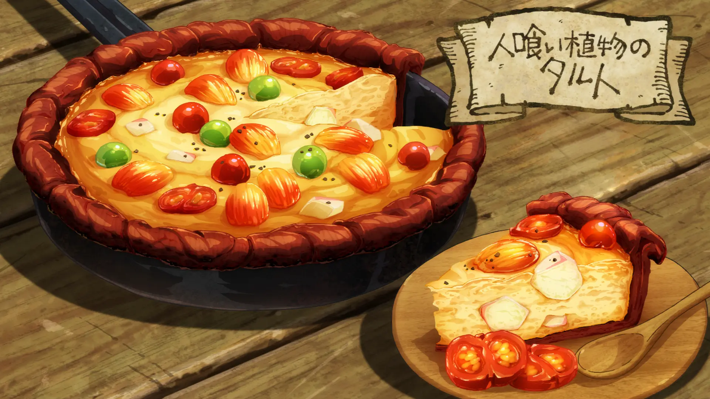
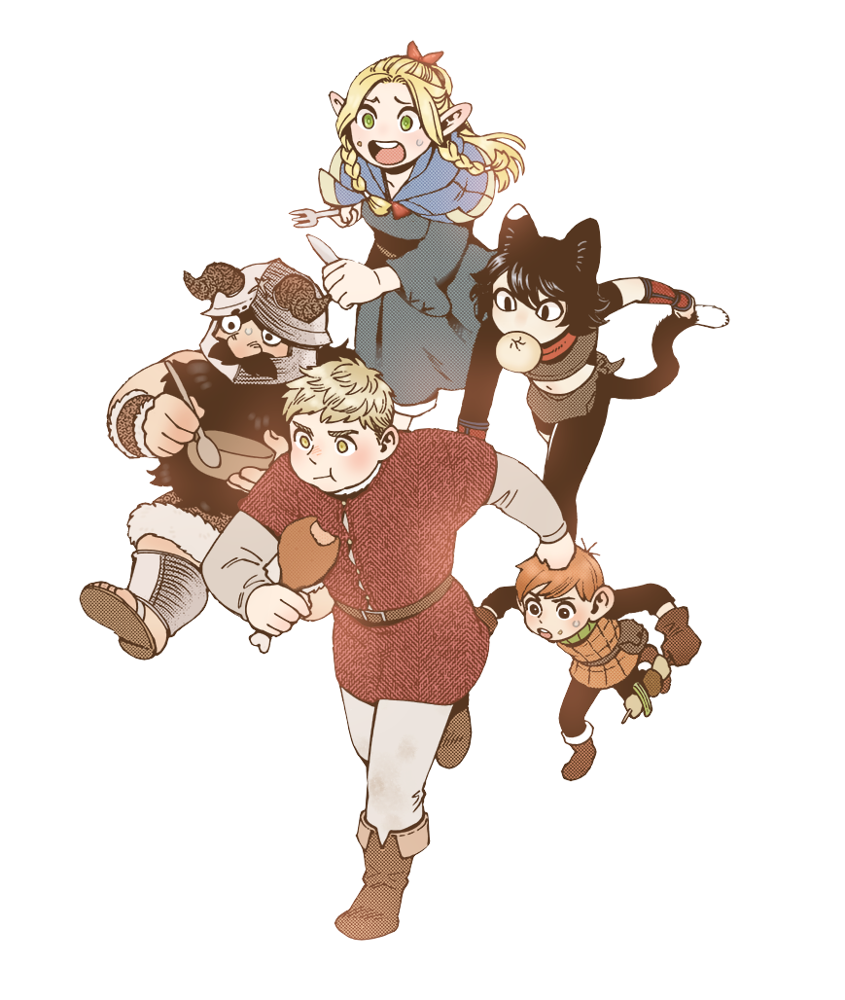

Man Eating Fruit Tart

A savory tart with a spicy salt and pepper kick. The pastry is made from tree fruit skins and slime is used instead of gelatin.
Ingredients (for 3-4 servings)
- Broth from Scorpion soup.....200ml
- Slime gelatin.....80g
- Baraselia.....3 medium sized
- Meeroak.....5-6 medium sized
- Betan.....3 medium sized
- Salt.....pinch
- Pepper.....pinch
Directions
- Lightly steam the Meeroak fruit.
- Cut around the stem of the Meeroak fruit and pull out the seeds.
- Carefully peel the skin off and beat it until soft.
- Line your pan with the skin. The skin is to keep the tart mixture from burning.
- In another bowl, grind up the fruit and slowly add the Slime and Scorpion broth until the mixture is thick and smooth.
- Lightly add salt and pepper to taste.
- Cut some of the other tree fruits into bite sized chunks but leave a handful for later.
- Throw the fruit chunks into the mixture.
- Lightly mix and then pour the mixture into the skin lined pan.
- Cook under medium heat.
- Once the surface starts to bubble, add the rest of the fruits on top.
- Let it cook for a few more minutes and then finish off with a pinch of salt and pepper.
- Let the tart sit and cool for a few minutes so the slime hardens.
- Enjoy!
